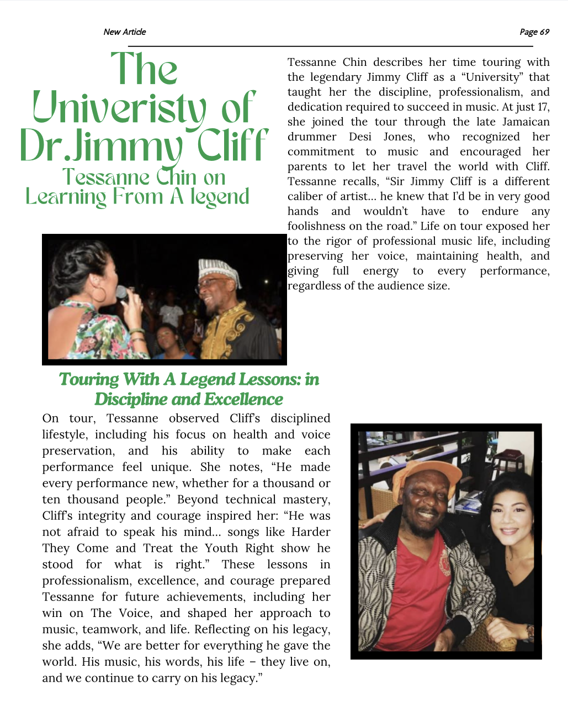

Fig. 1 — Published feature, Jamaica Diaspora Magazine, page 69.
Exhibit 01
The University of Dr Jimmy Cliff
This feature was built around a recurring idea in Tessanne Chin’s recollection of touring with the reggae statesman Jimmy Cliff OM: that the years she spent travelling with him amounted, in her own words, to an informal education. My task was to shape the interview material she had given into a piece that would read as tribute rather than as straightforward biography, since the article was produced in the period following Cliff’s death in November 2025, at the age of eighty-one, and its tone needed to carry the weight that occasion demanded.
The principal difficulty lay in sequencing. Chin’s account moved fluidly between anecdote, technical observation of Cliff’s stagecraft, and reflection on how the experience shaped her own subsequent career, including her win on the American singing competition The Voice in December 2013. Reproducing that fluency in prose without flattening it into a list of facts required several passes at the structure before the piece held together as a single narrative arc rather than a set of loosely connected quotations.
What I take from this exercise is a firmer grasp of how music journalism functions as a form of cultural documentation. A profile of this kind is not only reporting what a source said; it is deciding, with some editorial responsibility, which parts of a life carry forward as legacy. That is a different discipline from the campaign-facing writing I had done previously, and it sharpened my sense of when a subject calls for restraint rather than embellishment.